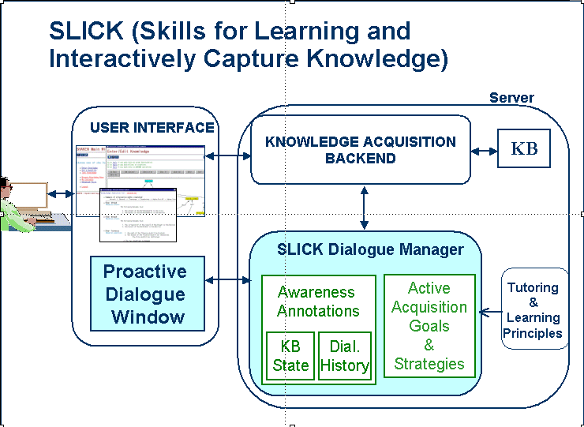

|
|

|
| Skills for Learning to Interactively Capture Knowledge | |
Description
The goal of our work is to develop acquisition interfaces that are proactive
learners, able to reason about learning activities and with initiative in
participating in the process accordingly. Our approach is to enable
acquisition tools to have acquisition goals and be aware of the level of
competence and confidence of the knowledge they are acquiring. Drawing from
limitations shown by previous tools in their interactions with users and from
learning/teaching strategies that are typically used in tutoring systems, we
formulated goals and strategies to turn acquisition tools into better
students.
